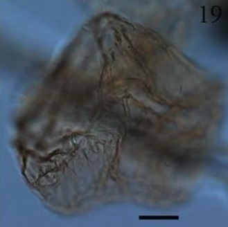

CYSTS LIST
LEJEUNECYSTA
Surface |
Shape |
Remarks |
Species |
Central body (um.) |
Image |
GranulateDark brown |
Pentagonal outlineVery angular aspect |
Acuminate antapical horns with solid tipsGranulate and strong, straight folds |
Lejeunecystaacuminata | 53 to 116 (L) x 61 to 109 (W) |
|
PsilateBeige |
Rhomboidal, angular outlineHorns small solid tips |
Wall of pointed tips is thicked, with solid ends of horns |
Lejeunecystaadeliensis | 120 to 114 (D) |
|
Smooth with scattered foldsTransparent |
DeflandroidApical horn hollow, very pointedLateral horn absentAntapical horns closely spaced together |
Elongate attenuated shape, concave margins and narrow blunt antapex |
Lejeunecystaattenuata | 103 to 127 (D) |
|
SmoothLight brown |
Pentagonal outlineConic epicyst shorter than trapezoidal hypocystShort antapical horns |
Epicyst/hypocyst sizeLength of antapical horns |
Lejeunecystabeinenensis | 76 to 86 (D) |
|
SmoothLight to dark brown |
Ovoidal to pentagonalSome thickening at the apex and antapexProminent rounded apex and low to high, rounded shoulders |
Consistently developed shouldersBroad paracingulum |
Lejeunecystacatomus | 64 to 70 (D) |
|
LevigateLight brown |
Pentagonal outlineSymmetric epicyst and hypocystShort apical horns and solid distal tipsLarge antapical depression |
Levigate surface, shape and has never pericoels |
Lejeunecystacommunis | 60 to 95 (D) |
|
SmoothBeige |
DeflandroidApical horn relatively long, solid tipShort apical horns and solid distal tipsLateral horns absentAntapical horns separated |
Conspicuously inflated epicyst with strongly convex sides widening to the cingulum, making the cyst markedly wider than longer |
Lejeunecystacowiei | 60 to 80 (L)70 to 100 (W) |
|
Smooth to finely granulatedLight orange, brown |
Dome-shaped without apical bossEpicyst broad. Hypocyst large |
Two very small antapical horns with thickened distal tips. |
Lejeunecystaepidoma | 74.6 to 84 (L)74.6 to 80 (W) |
|
Smooth |
Epicyst longer than hypocyst with no striationsSlightly concavity of epicyst sides |
Blunter apical hornFew developed spines on antapical horn. |
Lejeunecystafallax | 74.6 to 84 (L)74.6 to 80 (W) |
|
Smooth to finely granulated |
Outline rounded, pentagonalEpicyst rounded with apical bossDepression antapical absent |
Rounded pentagonal ambitusTwo antapical protrusions rather than developed antapical horns |
Lejeunecystaglobosa | 51 to 74 (L)43 to 81 (W) |
|
Covered with low granules |
Pentagonal outlineApex acuminateTwo antapical horns short, conical, pointed to slightly rounded |
Ornamentation and cingulum expressed by two transverse echinate ridgesSometimes this area is slightly inflated |
Lejeunecystagranosa | 85 (L)94 (W) |
|
Finely granulated to smooth with irregular vertical folds |
Subpentagonal outlineRound symmetric epicyst and hypocystShort apical and antapical hornsLarge antapical depression |
- |
Lejeunecystahyalina | 92 (L)87 (W) |
|
Smooth and devoid of sculpturingBeige |
Pentagonal to subroundedApical and lateral horns with small solid tips |
Large size and broad aspect |
Lejeunecystakatatonos | 58 to 96 (L)74 to 118 (W) |
|
Levigate |
PentagonalConical epicyst with rounded to slightly acuminate apexHypocyst trapezoidal with two short, pointed antapical hornsAntapical depression low |
Levigate surfaceSize of antapical hornsCingulum and prominent apical horn |
Lejeunecystalata | 109 (L)128 (W) |
|
Smooth and wall thinBrown |
PeridinioidApical and antapical protrusions have thickened wallNo striae present. |
Small cingulum, thickened wallApical and antapical horns |
Lejeunecystaoliva | - |
|
FibrousLight brown to almost colourless |
PeridinioidApical and antapical protrusions have thickened wallNo striae present. |
Cingular ridges denticulate |
Lejeunecystaparatenella | - |
 |
SmoothLevigate |
Pentagonal and rounded outlineShort apical horn and distally acuminate, short antapical horn, symmetric with solid and acuminate tipsNo striae present. |
Epicyst sides, size of antapical hornsPericoels have never been observed |
Lejeunecystapulchra | 63 (L)67 (W) |
|
Scabrate to verrucateDark brown with dark papilla present on tip of each horn |
Subcircular to elliptical |
Well rounded, rotund outlinePoorly developed apical and antapical hornsDistinctive scabrate to verrucate or pustulate surface sculpture |
Lejeunecystarotunda | - |
|
Brown |
Antapical and apical protrusions have thickened wallNo striae present |
- |
Lejeunecystasabrina | 60 to 95 (L)19 to 27 (W) |